11/03/2007-18/03/2007
LONDON
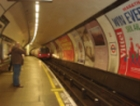

 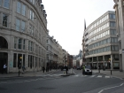
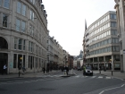"OUR HOSTFAMILY"
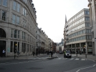
Our host family is
composed of Mrs. Stella, the mother, her daughter Jennifer and the
grand-mother . Stella and her mother came
here from Spain 30 years
ago. Unfortunately we have seen Jennifer only once and
we don’t know where she lives or what job she does.
There are also two
other guests, that stay here to study English: Alexander and Andrea.
We know that Andrea
is from Columbia and that she’s 15 years old. She told us that
she
is here to study English and she attends the “Swandean/ CES
School
of School” with us. Besides, Andrea goes to work every morning
and
she must get up very early.
We haven’t
spoken
to Alexander because he is very shy and he seems to hide when we are
around.
In this family there
is also a cat: her name is Martrak and she is black and white.
We are very
happy to stay
in this family because these people are really very kind, generous
and they make us feel as in a real family.
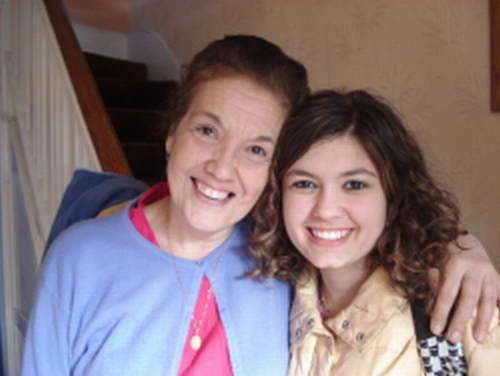 Veronica and Stella, our landlady
"SCHOOL LESSONS"
Our school is very nice. It is a private school where guys form others countries go to study English. Of this school we love the furnishings and the small, cosy classrooms.
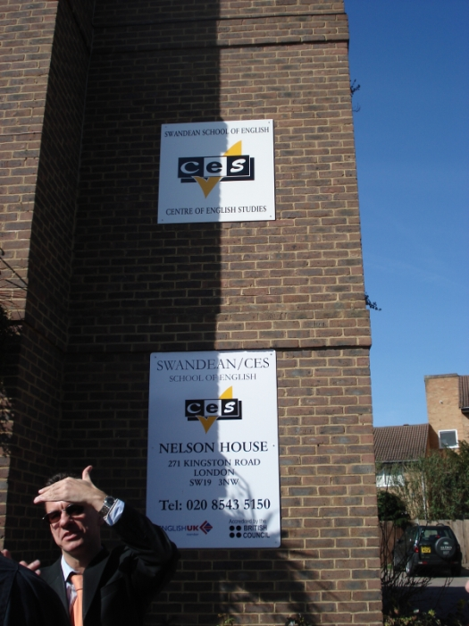 The school and the director
Our English
teacher’s name is Kathy and she is 34 years old. She is tall and
quite slim. She has medium length, straight, blond hair and big,
light blue eyes. She
has visited 30
countries and she has taught in china for a year. Kathy
is very unusual and
funny but she is a very good teacher.
She likes cats and
dolphins and, when she was in New Zeland, she swam with some of
them. Her favourite food is fish and chips and her favourite drinks
are cider and whisky while her least favourite food is
rice.. Her boyfriend’s name is Sunny and he works near London.
With her help we
have taken part to many games and exercises and we have studied
English in a funny way. The exercise that we have loved most was when
we had to mimic the jobs and the our friends had to guess them.
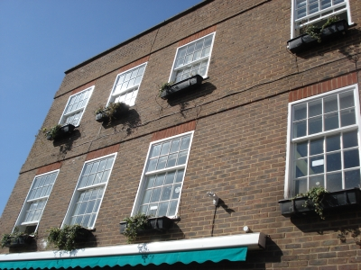 The school
The school here in England
is more pleasant than the Italian school because it starts at 9:30
and it finishes at 13:00.
We are very happy to
have had the possibility to study at the Swandean School of English
in a funny and entertaining way. We think that this experience has
been really gorgeous and we hope that we will have the opportunity to
learn the local language this way in others countries as well.
Vanessa Tassi e Veronica Otta
MY
STAY IN LONDON
My stay in
London has bee very nice.
In the
morning I and my class went to the
English school and in the afternoon we visited a lot of places, as
monuments
and parks. There was two of us in each different house and I was with
Veronica.
At first I felt embarrassed because I
had to stay for a week in a house of persons that I had never seen!
There were
the landlady Stella, her mother and other two students, Andrea and
Alexander
who studied English like us.
Stella and
her mother were Spanish and Andrea was Columbian. I don’t know
which
nationality was Alexander because I saw him only twice times and we
just said
hello and goodbye…..
Stella talked so much with Veronica and me about the weather, her garden where there were foxes, etc. In the evening she prepared the dinner for us and she and the other “components” of the family ate in the dining-room leaving us alone in the kitchen.
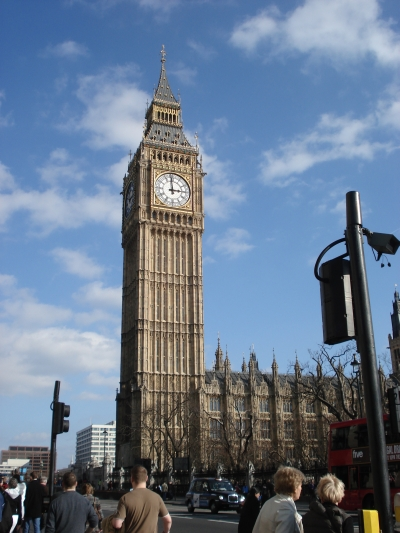
Big Ben
The food
wasn’t very good by I enjoyed the hospitality. We have talked a
lot also to
Andrea about a lot of things as the most beautiful cities of Italy or
what she
did in Columbia.
When we
arrived she once accompanied us to our school on the first day, when I
and
Veronica had to return home we got lost!....
However the school was 40 minutes from our house: we had had to take two busses! Anyhow, the school was very great: there were a computer room and three floors with the different classrooms. Our teacher’s name was Kathy and she was a very good teacher. In five days we learned the grammar and the pronunciation with games and very funny, but, besides jokes it was very instructive.
 Vanessa e Veronica in
Trafalgar Square
Vanessa e Veronica in
Trafalgar Square
When we
left the institute, we went to visit some places. We have visited
Buckingham
palace, St’ James Park (I love it!), St’ Paul Cathedral ,
British museum, the
Tower of London, and other important museums. It has been a very good
experience because I amused my self and I will repeat it.
Tassi Vanessa
Week in London
The week from 11th March to 18th March we went to London for a stay with our teachers Mrs. Casanova and Mr. Mc Daniel.
During the week we went to school from 9.30 am to 1 pm every morning. At 1 pm we went to London by underground and we visited the most important places of the city. In the evening we returned home, we ate with our host-family and in the evening we could go out with our friends.
The English school was very nice. It was a private school where foreigner students go to learn English.
Our teacher's name was Kathy and she was 34 years old. She was very kind, funny and a grat teacher. With Kathy I've learned a lot of new words and my knowledge of the language is better now. Kathy played various game with us and with this method we learned English in a funny mode. At 11 am there was a break for an half hour and we went to buy a pizza at the “Panetteria Italiana” that was in front of the school and then we returned to our classroom to continue the lesson.
When the school finished at 1pm we went to London by underground from the station of south Wimbledon.
The first day we saw visited Buckingham Palace, Trafalgar Square, the National Gallery and St James Park.
 National
Gallery
National
Gallery
 St James Park
St James Park
The second day St Paul Cathedral, Museum of London and a tour of Wimbledon with Kathie and David, the principal of our school.

 St Paul Cathedral
St Paul Cathedral
The third day we went to the National History Museum and the Science Museum.
The following day we went to Greenwich to visit the Royal Observatory, the Maritime Museum. Unfortunately the Cutty Sark and the Queen's house were closed and we coulden't visit them.
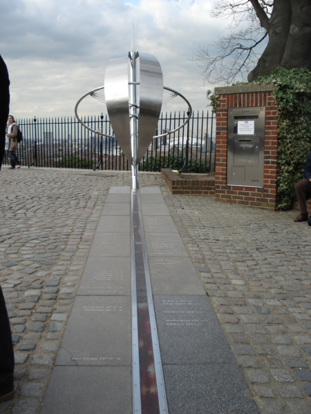 Greenwich Meridian
The
5th day we visited the Tower of London and the Clink
Prison Museum.
On
Friday we visited the Globe and Southwork Cathedral.
On
Saturday we went to Covent Garden, where I went shopping and the
British Museum that was very interesting.
The
last day we saw the Tower Bridge Exhibition wich was very nice. The
only moment of bed luck with the weather was on the last day; when we
returning home it started to rain.
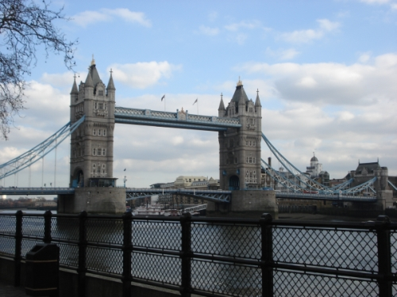 Tower Bridge
The places that I liked best were the Natural History Museum and St James Park! They were fantastic! And the place that infortunately I diden't enjoy so much was the Clink Prison Museum because I don't like torturing instruments. But I'm happy to have seen also this museum.
My host-family was very nice and composed by Mrs. Stella, Jessica, the Stella's daughter, two other guests Andrea and Alexander and the cat. Andrea and Alexander were two other young people who had rent a room in Stella's hause to went to study English. Andrea was 15 years old and came to school with me and Vanessa every morning. She was very funny and very nice. My host-family lived in Norton in a 3 floor semi-detached house. Mr Stella was a perfect chef and all the food that she cooked were excellent. Stella was also very kind and nice with me and Vanessa and I was very happy to stay at her house.
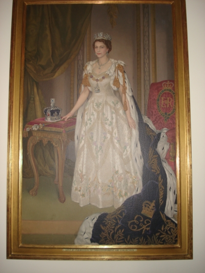 Queen Elisabeth II
This week was very positive for me: I enjoyed myself, visited one of the most beautiful and famous city of the world and I was very good in London!
All was fantastic: my host-family, the places, the school and the teachers. For me it was the best week that I spent with my friends and my teachers and I'm ready to go away with them for another travel!
Veronica Otta